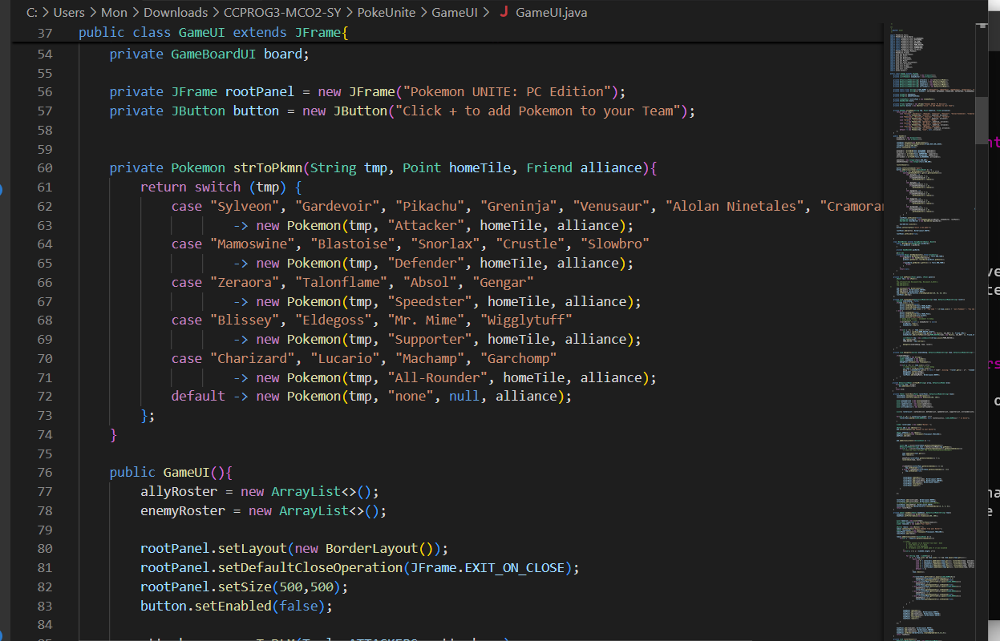

I'm Mon Jericho Sy, age 21, BS Computer Science Major in Network and Information Security graduate of DLSU, currently just vibing and enjoying life out there. I like trains, I like tearing things apart and analyzing how they tick, and I like learning about things in general.
what are your APQ and PCK results that you did during SAS1000 in 2021 and SAS2000 in 2022 in DLSU and what are your thoughts about that?
Here are my APQ and PCK results...
.. and here are my thoughts about this
I actually recognize that throughout my colllege years, my interests and hobbies haven't changed that much, as proven by how I still identify with my PCK results. What did change, in my opinion, is my approach in life, as indicated that it feels like I'm reading someone else's APQ results. I recognize that it was me in the past, but still reading about how "I am a shy person" is incredibly bizzarre. Overall, it really was a throwback to the past, and my God it does bring back so much memories of my entire college stay.
cool thoughts, cool thoughts, but what about your resume? you're not going into the workforce without one, are you?
sure, here's my resume:
so... what did you do in DLSU anyway? were you proud of any particular things in there? any achievements that you can call your own?
there's not much that I can call my "own", but here are the highlights:
My First College Year in DLSU
CCPROG3 Pokemon Go Clone
We had to create a Pokemon Go Clone under a limited time and applying the OOP principles that we have learned in CCPROG3. It was incredibly difficult implementing all of the features that was requested, but it resulted in an incredibly satisfying job that I would love to redo again given what I know.

Why would you give a 50 page document to a fresh college year student? Why would you make them recreate Pokemon Go of all games? It was a fun project to work on, though.
CCDSALG Competitive Programming Scores
In this subject, our professor gave us an opportunity to learn formal logic, and we were made to interpret a documentation written in formal logic for our final project. Let me tell you, it is incredibly fun to slowly chip away at arcane documentation, only to realize that the professor is asking you to make a tic-tac-toe clone. Overall, this really gave me an appreciation for formal logic, and also the desire to have more activities in the same vein as this
My Second College Year in DLSU
CCINFOM Database Schema Management
In this assignment, I was forced to do two projects at once even though I had groupmates, turning what should have been an easy subject into a very intensive one. The first project was creating a database schema, the second project was implementing a database schema given details. Both of these projects was hard.
Jesus Christ this was hell to work on, considering my groupmates dropped out or checked out midway
CSARCH1: Creating a Full Adder
This was honestly one of the more fun and esoteric projects that I worked on. We were made to create a full adder based only on what we learned in the class, and it was pretty fun tryng to make one out of theoretical circuits.
My Third and Final College Years in DLSU
Hack4Gov Competitions
I joined various hacking competitions online and offline, but the represenation of all of that is the Hack4Gov competitions held in various places within Metro Manila. Let me tell you, it is very humbling to think that you are an expert at various pentesting techniques, then go to a competition and be extremely humbled by the competitors in there. Overall, it was a good learning experience
NSDSYST Server Program
For NSDSYST, we had to create an image processing server, and handling message queues and image processing all at the same time gave me an appreciation for how other people handling async'd servers.